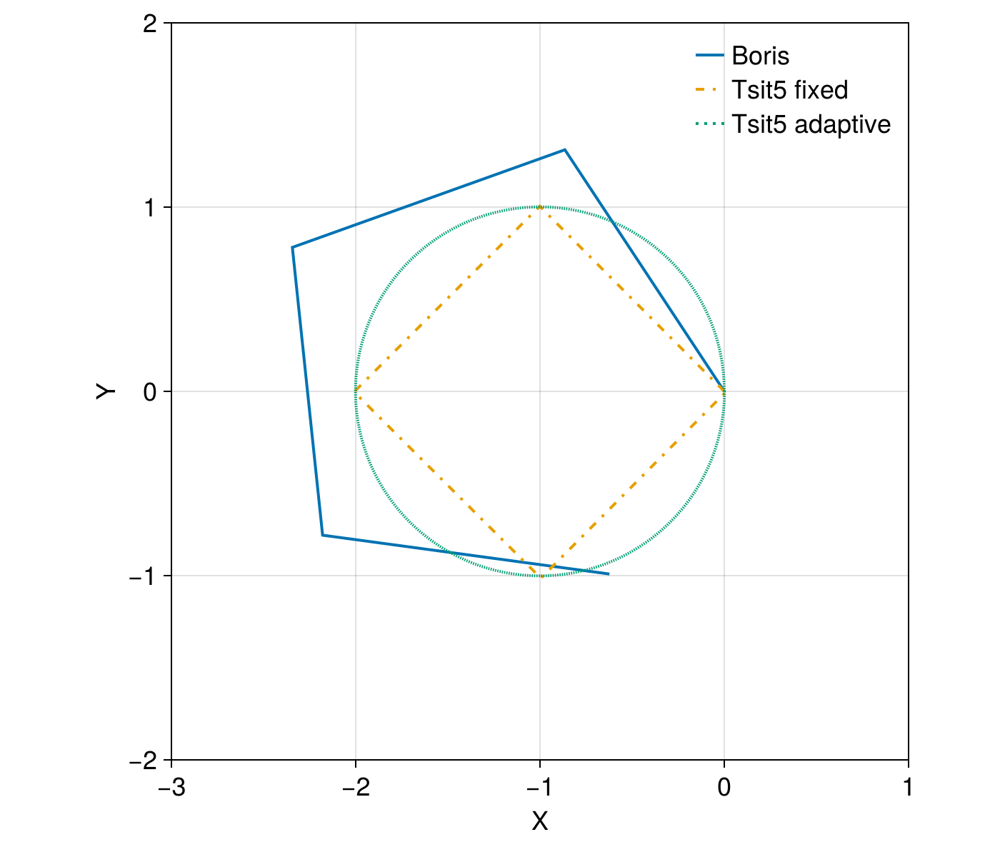

Boris method


This example demonstrates a single electron motion under a uniform B field. The E field is assumed to be zero such that there is no particle acceleration. We use the Boris method for phase space conservation under a fixed time step. This is compared against other ODE general algorithms for performance and accuracy.
using TestParticle
using StaticArrays
using OrdinaryDiffEq
using CairoMakie
CairoMakie.activate!(type = "png")
uniform_B(x) = SA[0.0, 0.0, 0.01]
uniform_E(x) = SA[0.0, 0.0, 0.0]
x0 = [0.0, 0.0, 0.0]
v0 = [0.0, 1e5, 0.0]
stateinit = [x0..., v0...]
tspan = (0.0, 3e-6)
dt = 3e-11
param = prepare(uniform_E, uniform_B, species=Electron)
paramBoris = BorisMethod(param)
prob = TraceProblem(stateinit, tspan, dt, paramBoris)
traj = trace_trajectory(prob; savestepinterval=10);
@time traj = trace_trajectory(prob; savestepinterval=10); 0.003996 seconds (3 allocations: 468.969 KiB)
Now let's compare against other ODE solvers:
prob = ODEProblem(trace!, stateinit, tspan, param)
sol1 = solve(prob, Tsit5(); adaptive=false, dt, dense=false, saveat=10*dt);
@time sol1 = solve(prob, Tsit5(); adaptive=false, dt, dense=false, saveat=10*dt);
sol2 = solve(prob, Tsit5());
@time sol2 = solve(prob, Tsit5()); 0.017513 seconds (10.06 k allocations: 2.042 MiB)
0.005244 seconds (49.56 k allocations: 5.743 MiB)
The phase space conservation can be visually checked by plotting the trajectory:
f = Figure(resolution=(700, 600))
ax = Axis(f[1, 1], aspect=1)
@views lines!(ax, traj[1,:], traj[2,:], label="Boris")
lines!(ax, sol1, linestyle=:dashdot, label="Tsit5 fixed")
lines!(ax, sol2, linestyle=:dot, label="Tsit5 adaptive")
axislegend(position=:lt, framevisible=false)
We can see that the Boris method is both accurate and fast; Fixed time step Tsit5() is ok, but adaptive Tsit5() is pretty bad for long time evolutions. When calling OrdinaryDiffEq.jl, we recommend using Vern9() as a starting point instead of Tsit5(), especially combined with adaptive timestepping.
This page was generated using DemoCards.jl and Literate.jl.